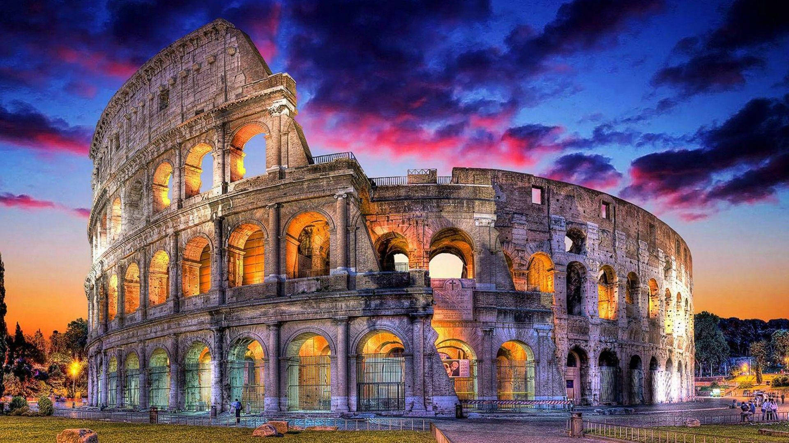
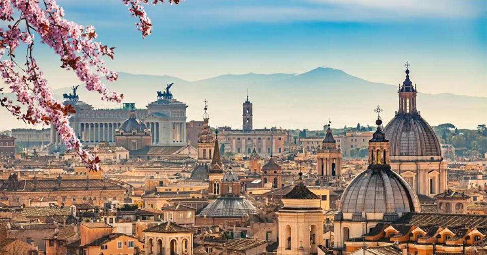
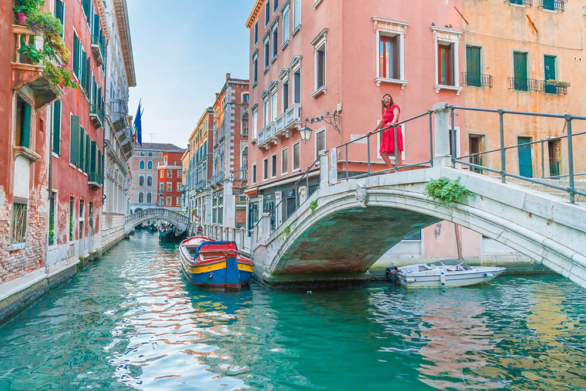
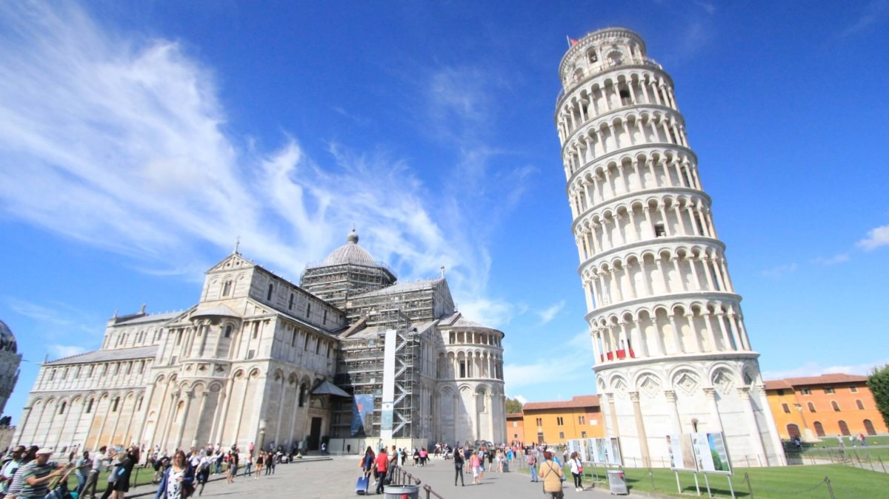
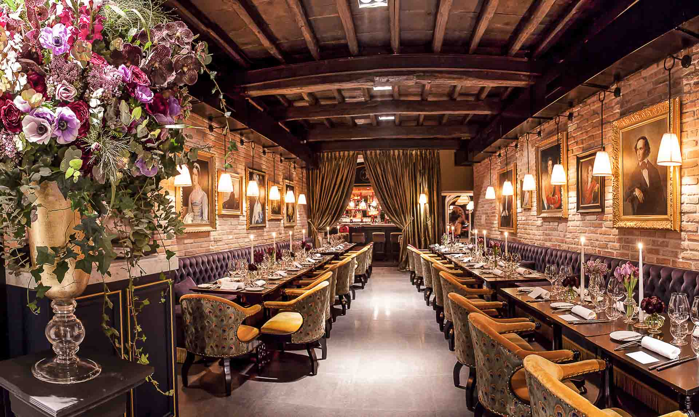
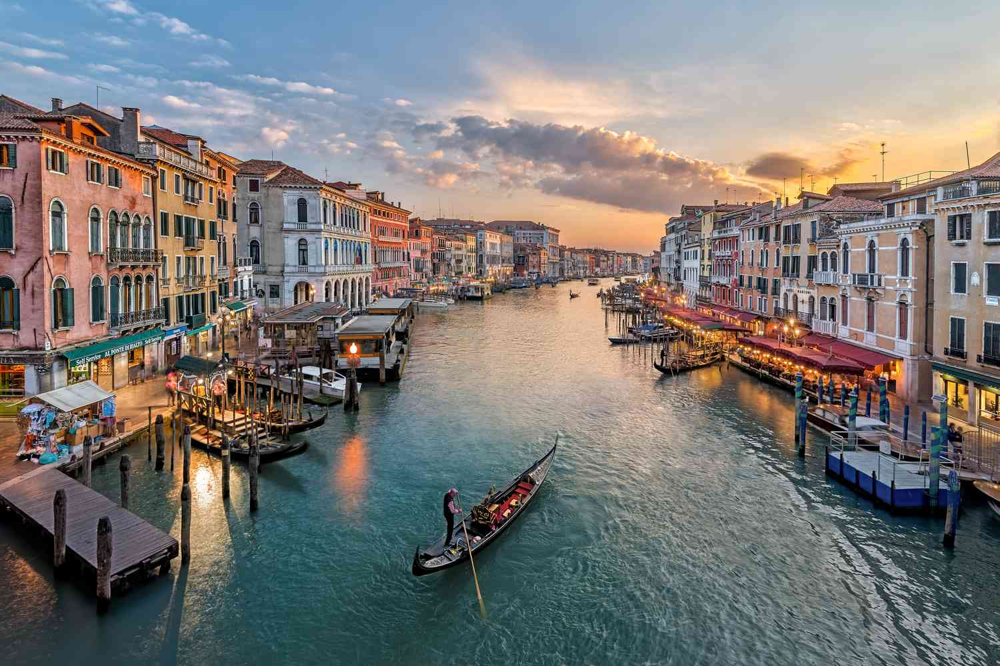

Rome
Rome is the capital city of Italy and one of the oldest continuously inhabited cities in the world. It is often called the Eternal City because of its long and rich history. Rome was once the center of the Roman Empire and remains an important cultural, political, and religious center today.
History
According to legend, Rome was founded in 753 BC. Over time, it grew into one of the most powerful cities in the ancient world. The Roman Empire influenced law, architecture, engineering, and government systems that are still used today.
Culture
Rome is famous for its art, museums, and architecture. The city is home to world-renowned landmarks, churches, and historical buildings. Italian cuisine, fashion, and festivals also play an important role in Roman culture.
Tourism
Millions of tourists visit Rome every year. Visitors explore ancient monuments, beautiful squares, and historic streets filled with cafes and shops.
Famous Places
Some of the most visited attractions in Rome include the Colosseum, Vatican City, Trevi Fountain, Pantheon, and Spanish Steps. These places represent the beauty and history of the city.
Gallery






Rome
| Country | Italy |
| Region | Lazio |
| Founded | 753 BC |
| Population | 2.8 Million+ |
| Nickname | Eternal City |
| Famous For | History, Art, Architecture |